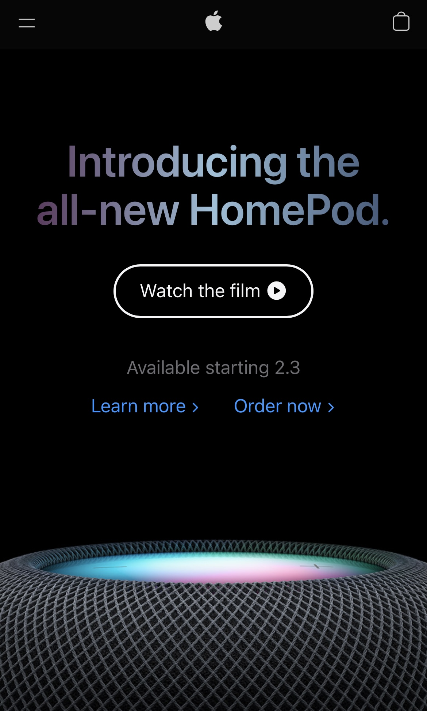

Visual Hierarchy

Apple.com is a good example of Visual Hierarchy. Their main purpose is to visualy lead the user to their devices. They acomplish this by using lots of color and contrast to make their site more intresting.

Apple.com is a good example of Visual Hierarchy. Their main purpose is to visualy lead the user to their devices. They acomplish this by using lots of color and contrast to make their site more intresting.
LDS.org does a great job using white space. By doing so they're able to maintain a clean organized design layout.
Slack.com keeps their site clean and consistent by the italicization of text alignment. By doing so, the site is easy and clear to understand and read.